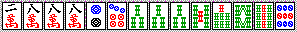

さて麻雀講座です。講師は私、とつげき東北です（成績はこちら）。「だれやねん」と言わないで下さい（ﾉ＿･､）。だれでもないです。が、麻雀はまずまず得意です。大学の友達とやる麻雀では、平均順位２．１位（トップ率４０％）、東南戦２６０００スタートで終了時平均点３６０００点といったところかな（１００半チャン程度の集計）。麻雀の初級者、中級者に麻雀を教えることくらいはできると思って、この講座を開講することにしました。
とつげき東北麻雀講座 ﾘｨﾁ（ﾉ⌒∇）ﾉ☆⌒（＾-＾ ）▼.●.）〜

さて麻雀講座です。講師は私、とつげき東北です（成績はこちら）。「だれやねん」と言わないで下さい（ﾉ＿･､）。だれでもないです。が、麻雀はまずまず得意です。大学の友達とやる麻雀では、平均順位２．１位（トップ率４０％）、東南戦２６０００スタートで終了時平均点３６０００点といったところかな（１００半チャン程度の集計）。麻雀の初級者、中級者に麻雀を教えることくらいはできると思って、この講座を開講することにしました。
この麻雀講座を書くにあたって、ちまたにある麻雀解説書や戦術書と違うものにしなければならない、と考えました。同じなら見てもムダですもんね(笑)。そこで思ったのが、麻雀解説書などを読んで、果たして実戦でうまくなれるのか？ ということでした。確かに役の作り方、テンパイの見破り方、など、一見ひととおりの技術が書いてあります。ですが、それだけでは足りないのです。
降り方がわかっていても降りる気がなければ降りられません。そう、どこでどう「降り」を決断すべきなのか、どんな状況なら勝負するのか、大きな役を作るのか、ハイパイが配られたらまずは何を目指すのか、そういったことがあまり書かれていないのです。だから戦術書の部分部分がわかっていても、なかなか上達しないのではないでしょうか。
そこで、この講座では、一手一手の打ち方もそうですが、むしろどんな状況でどんな役を狙うのか、どういった時に降りればよいのか、ということを意識的に書きます。つまり、この講座を読めば、もう何をすれば良いかが全てわかる（！）のです。
そうです、この講座はまさにあなたを「強く」してくれるはずです。
【基礎基礎編】
強くなるために必要な考え方 Ｒを安定させる思考
客観的で統計的な技術を求めよう
強くなるために、まず麻雀ゲームの性質について触れておきます。麻雀はとりわけ客観的・統計的な判断が要求されるゲームです。と言うのも、麻雀は偶然性が高いゲームだからです。将棋のプロがアマチュアの人と対戦すれば、１０戦全勝などあたりまえですが、麻雀のプロ（と言っても法的にはただの愛好家ですが）がアマチュアと１０戦やったら、負け越してしまうこともあるでしょう。
麻雀においては、「悪い方法」が偶然、結果的に成功をもたらす場合がしばしばあるわけです。だからこそ、短期的な成功や一時的な勝ちから「この方法は強い」とか「こうやるとうまくいく」と判断していると、いつまでたっても麻雀に強くなれません。例えば、５回連続カンチャン追っかけリーチが成功したからといって、「カンチャンでも即リーが強い」などと信じるようになると、結局長期的には弱くなってしまうわけです。ちょっと勝ちが続くと「強くなった」だの、その後いつもの状態に戻ると「調子が悪い」だのと言う人がいますが、しっかりデータをとってみればその連勝自体が偶然であったことがわかる、ということもあるでしょう。
麻雀に強いと言うことは、いかなる偶然が起こってもそれに動じずに行使できるような方法論（技術）を確立するということです。偶然性（確率）を内包した技術です。ちょっと「ついていない」からと言って打ち方を変えたり、気分によってリーチをしたりしなかったりではなく、「この状況ではこうするのが最も勝つ確率が高い」ような方法を見出すのです。
単純なサイコロ賭博を考えましょう。１に賭けて当たれば相手から５００円もらえます。２〜６に賭けて当たれば１３０円もらえます。掛け金は１００円です。あなたは２〜６に賭けましたが、３回連続１が出てしまい、損してしまいました。麻雀に強い人とは、いってみればここで２〜６に掛け続けられる人のことを言うのです。１に賭けて結果的に儲けた人のことではありません。確率的には明らかに２〜６に賭けた方が得なのに、一時の成功・失敗や気分の問題で確率を無視してしまうこと、こういった不合理な惰性こそが、いつまでたっても麻雀が上達しない原因であると言い切りましょう。
私が３人リーチに対して字牌の中を止めたとき、「よく読んだね」「冴えてる」と言われたことがあります。残念ながら、私は人の心を「読む」などということはできませんし、ただの一度も「勘」を働かせたことはありません。そんなことは誰にもできません。ただ、中で振り込めば点数が大きいことと、３人テンパイで中が切れていないということから、単純に中を切った場合の損失の大きさを統計的に知っていただけです。シロウトには「読み」や「勘」としてしか捉えられないような打ち回しが、当然のように自分の技術からできるわけです。こういった技術を統計的に作っていれば、「勘」や「読み」に頼っている人より勝率がぐっと高いのも当然ではないですか。麻雀とは決してバカげた「勘」や怪しげな「読み」の勝負ではなく、単純にして明快な「理性」の勝負であるわけです。
下らない迷信を信じないようにしよう
麻雀界には、なぜか変なオカルトが流行りやすいようです。麻雀プロなどという、知的に低レベルな人々が権威を持つ世界ですから、全体の「痴性」も推して知るべきです。
代表的なものに「牌の流れ」とか「ツキ」とかいった概念があります。噴飯ものですね。
裏返しに置かれた牌が、どうして人間の都合で任意に並んだり入れ替わったりするでしょうか。「トイツ場の流れ」ができるように、わざわざ４枚おきに同じ牌が並んだりするでしょうか。こういうアホな考えに騙されているうちは、なかなか強くなれないでしょう。もちろん、全自動卓の混ぜ方のシステム自体に何らかの偏りがあって、多少そういった効果が生まれることがないとは言いません。しかしそういったものはほとんど誤差であり、また誤差でないとすればそれは全自動卓のメーカーが悪いのです。ツミコミなどはルールで禁止されているわけですから、任意の偏りを持った積み方に問題がないはずがありません。
「ツキ」にもまた根強い信仰があります。先のサイコロ賭博の例で言うと、１が３回連続で出て損をした、確かにこれは「ついていなかった」と言ってよいでしょう。合理的に考えて得な方を選択したのに、たまたま確率の低い悪い結果が出てしまったのですから、これを「不幸」と呼んで差し支えありません。ここで「ツキ」と「結果」との関係を考えると、「つき」はあくまでも「結果」への「評価」なわけです。
「ツキ」が「結果」の「原因」として語られるようになると、これがオカルトです。「ついてなかったから１が３回連続で出た」「１が３回連続して出たから、今日はツキがない、これ以上やってもまた失敗するだろう」という浅はかな考え方です。あげくには「つきを取り戻すために、敢えて逆に賭けよう」となるわけです。これがまさに、アホがゲームに弱い原因そのものです。
アホは目先の成功・失敗に惑わされ、ちょっとした気分に支配され、確率的には損な方、損な方へと突進していきます。その結果さらに偶然勝ったりすると、短絡的にもその考えを信仰するに至り、確率的に「負けやすい」方法が染みついてしまうわけです。
麻雀のように偶然性が高いゲームであればあるほどこういった過程は踏まれやすく、「鳴いて流れを変える」だの「無駄な上がりだがこれで上がりグセをつける」などといったギャグとしか思えない発言を臆面もなく、真面目に、雄弁に語り初めてしまうのです。強くなりたければ、「ツキ」とか「流れ」を語る麻雀雑誌やプロの解説書を信じないことです。
メンツを作る基本的な方法 Ｒ１４００→１５００のステップ
まず一手一手の打ち方を勉強しましょう。と言っても、ツモる順番とかそういった基本的なことはもう知っているものとしますね。
そうではなく、いかに効率的にメンツを作るか、という技術の部分です。初級者むけではありますが、どうも一部の中級者には、不自然なメンツ作りをしている人が見受けられます。逆に言えばそういう人は、これをマスターすれば上級に一歩近づけるわけですね。
ではさっそくいきましょう。
基本的に、ターツ（２つの牌で、あと一つくればシュンツになるもの）には３種類あることはご存じの通りです。リャンメン（３４など）、カンチャン（５７など）、それからペンチャン（１２、８９）ですね。こういうのを基礎にしてシュンツを作るわけですが、リャンメンが最もシュンツになりやすいことは明らかです。また、一手でリャンメンに切り替わり得るカンチャンは、ペンチャンよりも有利なわけです。
そこで、ターツはリャンメン＞カンチャン＞ペンチャンの順に残すのが基本です。
また同じカンチャンでも、７９のカンチャンは６が引っ付かないとリャンメンになりませんが、５７のカンチャンなら４８のいずれが来てもリャンメンにできます。そこでより細かく
リャンメン＞３５、４６、５７のカンチャン＞１３、２４、６８、７９のカンチャン＞ペンチャン と言って良いでしょう。
ではペンチャンやカンチャンと、浮き牌（ぽつんと浮いた５マンなど）の有効性も比較してみましょう。最終的に１２のペンチャンで待ちになって、果たして上がりやすいか、というと、上がりにくいですね。そこで、ペンチャンなどを残すより、浮き牌を残してそれにくっつくのを待つ方が効率が良いのです。
またリャンカン（１３５とか４６８とか）の形は、牌を３つ使う代わりにリャンメン並に待ちが広いため、これもメンツづくりには有用です。
一つのメンツを作ろうとする場合、
リャンメン＞＝リャンカン＞３５、４６、５７のカンチャン＞２４、６８のカンチャン＞４、５、６の浮き牌＞１３、７９のカンチャン＞３、７の浮き牌＞ペンチャン＞１、２、８、９の浮き牌 と言って良いと思います。
これで効率よく１つのメンツを作ることができるようになりました。
ではこれを組み合わせて４メンツ＋１頭を作れば、「上がり」というわけです。
たまに初級者の打ち方を見ていると、もうメンツ候補のリャンメンが４つあるにも関わらず、無意味に真ん中の牌を貯め込んでいるような場合があります。これは牌を「全体的に」見てしまっているからこうなるのです。１４枚を、しっかりと「メンツ・リャンメン・・・」に分けて部分的に捉えることで、これは回避できますね。メンツづくりのコツは、まず、１４枚をリャンメンやカンチャン、浮き牌の集合体と捉え直すことにあります。
例えば ２３４５ とある場合、これをただ漠然と見るのではなくて、リャンメン２つ（またはメンツ＋１つの浮き牌）として捉えれば良いのです。するとこの形がいかに有用であるかがわかると思います。１、３、４、６のどれを引いても「メンツ＋リャンメン」の好形になりますし、７を引いても「メンツ＋カンチャン」にできます。
１２３４であれば、「メンツ＋４の浮き牌」または「ペンチャン＋リャンメン」と考えられます。「メンツ＋４の浮き牌」と捉えれば、この形は先程の不等式（？）から、「メンツ＋１３のカンチャン」等より有用であることがわかります。７９のカンチャンを捨てるか１２３４の１を捨てるかと言えば、カンチャンを先に切っていけば良いわけです。
少し複雑にして

これならどうでしょうか。ドラは考えないで良いとします。
リャンメンは ５６マン ４５ピン ５６ソウ ６７ソウ と４つあります。
また５６７ソウをメンツと考えれば、残り３つのシュンツを ５６マン ４５ピン ５７ピン 浮き６マン 浮き３マン あたりから作ればいいことになりますね。このいずれの場合でも、メンツのために最も不要なものは３マンです。ここは打３マンとします。
ただ、５６ソウと６７ソウは、お互いにお互いの待ちハイを１つずつ使ってしまっている形ですから、リャンメンと言えども完全な形ではありません。他の部分で普通のリャンメンができればそれに越したことはありません。場に出ている待ちハイの数を考えて打つことが大切です。
ここで３マンを切った後、６ピンをつもったとしましょう。何を切りましょうか。
即答できましたか？
リャンメンが ５６マン ４５ピン 、 完成メンツが ５６７ピン ５６７ソウ となりましたから、これで万全ですね。
打６ソウとすれば良いのです。場合によっては６マンでも構いません。６マン切りはタンピン狙い（イーペー・三色も考慮に入れる）、６ソウ切りは２ソウや６マンがアンコった場合のタンヤオのみも良しとする打ち方です。
（※ワンランク上の話：私はここで、場に出ている２ソウや６マンの数を確認します。もし２枚も出ているようなら、先に６マンから切ります。６ソウ切りはテンパイするために必要な牌が１７−α枚、６マン切りは１５−α枚で、それほど変わりません。この手はメンタンピン（３９００〜裏で７７００）を充分狙えるものです。またリーチ牌が６マンで待ちハイが４７マンになるのはできれば避けたいところです。逆に、例えば４７マンや３６ピンが５枚も切れているようなら、できるだけ６マンを残します。残り１２枚と１０枚では、相対的な差が大きくなります）。
何を切ればよいでしょうか。
ぱっと見て、７８マンと３４ソウで２メンツできることはすぐわかりますが、７ピンなどを引いた場合に８マンが頭になる可能性もでてきますね。分解して捉えてみましょう。
１） １３５マン ７８マン ２４ピン ５６ピン ３４ソウ 頭８ピン
２） １３５マン ７８マン ４５６ピン ３４ソウ 頭８ピン
３） １３５マン ２４ピン ５６ピン ３４ソウ 頭８マン
４） １３５マン ４５６ピン ３４ソウ 浮き２ピン 浮き８ピン 浮き７マン 頭８マン
主にこういったところでしょうか。
１）などは比較的うまい解釈のように見えます。これなら打８マンですね。
ただ、２）の方がより優れています。他の部分は同じで、メンツが一つ完成しています。こうなったら、後はできれば１３５のリャンカンがリャンメンに切り替われば完璧です。そこで浮き牌の２ピン、８マンを比較し、よりリャンメン→メンツになりやすい方を残せば良いのです。８マンは７マンが引っ付いても、既にあるリャンメンと待ちがかぶりますから、少し来にくいですね。そこでこの場合も打８マンが正解となります。２ピンに３ピンが引っ付くようなら５３１マンを一気に落とし（順目が早ければ取りあえず１からで良いかも知れません）ていきます。先に２マンが入ったら、即座に５マンは「不要」となります。ここでずっと５マンを残しておく人がいますが、メンツ候補がリャンメンで完成していれば、他の浮き牌はもう必要なくなります。
３）や４）は明らかに劣っていますね。
初級者で、ここで１マンを切る人もいるのではないでしょうか。これは失敗です。タンヤオを狙うつもりなら７８マンは使いづらいですし、なにより１マンを切ると２マン引きが極めて大きなロスになります。
結局、ここは打８マンが「正解」ですが、２）のように考えて打８マンとできる人と、ただ漠然と、経験や直感で８マンや２ピンを落とす人とでは、力に圧倒的な差があると思われます。
２）の説明で書いたような細かい分解・判断を、一回一回完璧にすることは今の私にはできませんが、これが完全になれば相当無駄なく一手一手を打つことができます。複雑になると私もまだ直感的に打たざるを得ないですが、常に「分解」を繰り返す練習をしていれば、少しずつロスが減っていきます（私の打牌が比較的遅いのは、直感に頼らずにできるだけこういった判断をしているからです）。
では最後の問題。何を切りましょう？ ドラはなし。
これですっと正解が出てくるようになるには、やはりそこそこ慣れなければ無理でしょう。
さっと分解して、１２３マン ２３マン ６７マン 頭３ピン 、 ３５７ソウ 浮き牌 ６ピン ５ソウ
要するに浮き牌にひっつけるか、リャンカンを埋めて残り１つのメンツを作れば良いわけです。
明らかです。１４枚の中で唯一切ってもチャンスを消さない牌がありますね。
打５ソウが正解です。
６ピンは引っ付きでリャンメンに変わる（＝リャンカンを切っていくことができる）可能性を持っています。５ソウが２個あって、仮に４ソウと６ソウが入ったとして、それが一体なんでしょうか。メンツが余るだけです。６ピン切りは中級者で卒業しなければなりません(笑)。
【基礎編】 努力目標：まずはＲ１７００を目指そう
攻撃：平場（全員の点数がほぼ同じ）での手作り Ｒ１５００→１６００のステップ
ピンフ（タンヤオ）を作れ！
ハイパイが配られました。何を考えますか？
私はこの時点で、ドラとヤクハイトイツと色の偏りをチェックし、特に別状がなければ必ずピンフを狙います。
いきなり言い切りますが、私は麻雀をやっている時、ほとんど次の５パターンのうちのどれかに当てはまります(笑)。
１）ピンフ（タンヤオへの変化もあり）を作っている
２）染め手を作っている
３）ヤクハイドラドラを作っている
４）チートイを作っている
５）ベタオリしている
それも、１）と５）が大半で、後はオマケみたいなものです。三色とかイッツーなどは、確かに奇麗な感じはありますが、意識的に狙っていくことはほとんどありません。なによりピンフは上がりやすく、一発が出やすく、裏ドラが乗りやすいのです。そしてピンフをテンパイしたら、降りるべき状況でない限り、即リーチです。これが攻撃の要となります。
「降りるべき状況」とか、他の役を狙う状況とかについては後述するとして、さっそく実践です。
はい、ピンフです。前にも書きましたが、どこに４メンツと頭を作るか、を、常に意識して考えて下さい。
この場合マンズ２３ ５６の部分に２メンツ、ピンズ７８９で１メンツ、頭は１ピンで取りあえず良いでしょう。もう一つは５ソウか７ピンにひっついたリャンメンで作れば良いわけです。ここで私は８マンを切っています。
初心者の人は（あるいは中級者も）なぜ西を切らないの？ と思うかもしれません。が、この手でピンフを作る際、８マンは明らかに不要です。７マンがくっつけば５６７８でリャンメン２つの形になりますが、それは５ソウに６ソウがひっつくのと同じ確率ですし、その上待ちハイが２枚少なくなってしまいます。９マンが来たとしても、次に必要な７マンは５６の方のメンツにも使わなければなりません。もう充分にシュンツ候補があるのですから８マンなど不要で、アンパイになりやすい西は取っておいてよいのです。まぁ中級以下であれば、とりあえず打西としても良いでしょう。ただし、８マンが使われることはなかなかないです。
直後、このようになりました。何を切りますか？ 私はここで２ピンを切りました。メンツ（候補）は２３マン、５６７マン、７８９ピンとでき、頭は１ピンなのですから、残る２ピン、７ピン、５ソウ、西を利用して１メンツ作ればよいわけです。当然、リャンメンになりやすい７ピンや５ソウは必要です。ここは西を切って３ピン受け容れに備えるのも手ですが、ここまでメンツ候補が好形になっているなら２ピンで良いでしょう。３ピンが来ても待ちが少なく、しかも端が少ない形になります。１ピンがあと一枚でも先に切られたら、かなり厳しい形になってしまいます。ひっつきテンパイができる形を残すことがピンフ作りのコツです。ただ、もしここで浮き牌の一つが７ピンではなく６ピンであったなら、取りあえず西を切る方が無難です。２６とか５９とかの形は、ど真ん中を引いてリャンカンに変化し得るからです。もし２ピンを先切りして４６になってしまったら、リャンメンに変わりにくい、使いにくいカンチャンになってしまうわけです。これは重要ですからよく覚えておきましょう。
さて、あといくつかやってみます。
７順目イーシャンテン。子の手牌です。なにを切りますか？
まずやるべきことは、メンツ候補、頭候補を考えることです。しつこいですが重要ですので、これだけは徹底して下さい。
メンツ（候補） ３４マン ２３ピン ４５ピン ６７８ソウ 頭２ソウ
ところでピンズが２３４５とありますが、この形が有効であることは以前にも書きました。１，３，４，６のどれを引いてもリャンメン＋シュンツという形にできますね。こういう形は（ピンフだけでなくメンツを作りたいときに）必ず残しておく必要があります。
本題に戻って、何を切るかですが、私は打４マンつも切りとしています。
ピンズに手をかけるわけにはいきません（７ピンを切って６ピンが来るとフリテンですし、リャンシャンテンに戻ってしまいます）し、４ソウを捨てて２ソウを頭に固定するなら、４マンがダブっている必要はないからです。もちろん２ソウや４マンがアンコになってタンヤオができる、という可能性もあるにはありますが、２５マンや６ピンをつもる確率に比べれば微々たるものです。４マンがかぶったらツモ切りすれば良いだけのことです。先にアンコができても、６ピンのカンチャン待ち（最悪の待ちです 笑）で、仮にリャンメンになってもピンフがつかず、１ピンの受けも含めて考えれば、下手するとリーチのみになってしまいます。親ならばともかく、子で平場（全員の点数がほとんど同じ場合）なら、リーチのみになる可能性のあるトイツやアンコは手早く落としていきましょう。
では４ソウはどうかと言うと、ここでは「必要」です。まだ５７ピンの部分がカンチャンで、充分ではないからです。もしここに５ソウでもつもれば、ソウズが３面待ちになり、２，７ピンを落として行くことができます。３ソウを引いた場合は、取りあえず７ピンを落としておいて、ピンズにリャンメン＋メンツができれば３４ソウ落とし、そうでなければ２または５ピン落としと広く対応できますね。
そうしたわけで、ここでは４マンは全く不要なわけです。（最終的には４ピンがひっつき、メンタンピンになりました）
オーラストップです。２位・３位とは僅差、特に２位とは５００点差で、なんとかダマで上がりたいところです。
とすると、ここは２ピン切りしかありません。メンツは１２３ソウ ６７８ ７８ ソウと３つあり、１ソウが頭です。
あと一つ、ひっつきでリャンメンを作るのです。ここで５ピンなどを落とすことでイーシャンテンになりますが、６ソウを先に引かないとリーチしなければならなくなります。トップで２位３位が迫っているのにリーチをして危険な目に遭うのは不利です。もし１ピンなどが来たら、１２ピンを落としてしまい、他の部分でリャンメンを作ります。
直後、運良く６ソウを引いてイーペーコー出上がり可能になりましたが、ここで後悔する必要は全くありません。その状況に置いて最善の策を尽くしたのですから、そのような打ち方を続けていれば結局は勝率が高まるのです。たまたま今回失敗したからといって、今後こういう状況で２ピンを残すようにする、などといったことをしているとどんどん下手になってしまいます。
さて、その後７マンツモって５ピンを切り、次に５マンが引っ付きました。７マンを切って（もちろんリーチをかけず）、出上がりで逃げ切りです。
最後に、ピンフ作りの「パターン」を伝授しましょう。
一番重要なことは、頭をなるべく端によせるということです。これはピンフに限らず、あらゆる役作りの基本です。
５とか６が 浮き牌＝メンツ候補 として使えなくなる、ということは、手を進めていく上で大きな障害となります。あげく、ゴタゴタとダンゴになってしまうのがオチです。どんなときでも頭を端に、端に寄せていく心構えでいましょう。もちろん、メンツ候補が充分にあって、なおかつ他に頭ができそうにない場合などは一向に構いません。
また頭を端に寄せることは、防御にもつながります。例えば２２３４５とある形と、２３４５５とある形を比べてみて下さい。他家リーチがかかって６をツモりました。２２３４５の形なら、仮に勝負にいく場合でも３を切って勝負できます。ところが２３４５５の形ですと、６を切らなければならなくなります。もちろん、このような状況はごくわずかではありますが、こうした微妙な差の集大成が、強さの差となって現れるわけです。
次に、カンチャンを恐れず残すことが重要です。これらのことをしっかり頭に入れて打てば、相当無駄なくピンフを作ることができます。
この形で、初心者は４ピンを切ったり、中級者でも取りあえず１ソウを切ったりするのではないでしょうか。打６ソウツモ切りすべきです。カンチャンは一手でメンツやリャンメンに切り替わりますから、ぜひとも残しておくべき形なのです。特にこの場合、６ソウを頭にすると「頭はなるべく端に寄せる」セオリーに反しますから、ぜひとも６ソウは切らなければいけません。６９ピンの受け容れが狭いのは確かですが、頭を別に作るとすれば１ソウや３ソウで作るべきなのです。ここではメンツ（候補）が ２３マン ７８９ピン １３ソウ ６８ソウ ５７マン 浮き４ピン とまずまず揃っているので、１３ソウはほとんど「頭候補」で良いと思われます。
仮に６ソウがアンコったとして、それでどうしますか？ リーチのみで上がっても大した手ではないでしょう。こういったかぶるトイツを先に落とすのがピンフ作りの基本と言えます。逆に、ペンチャンはリャンメンに変わらないので、浮いた中牌より先に切ってしまう方が良いです。
トイツ、特に中牌のトイツをむやみに増やさず、カンチャン＋真ん中の浮き牌１つ から、リャンメン（またはメンツ）への変化を見越すのがコツなのです。
リーチのタイミング
さんざんピンフ、ピンフと言ってきましたが、もしピンフができなかったらどうすればいいのでしょうか。
タンヤオでリャンメンになった場合は安心してリーチして良いでしょう。またドラがあるなら、リャンメンでリーチです（私がピンフにこだわるのは、「リャンメン待ちである」「２ハン以上あって裏ドラが期待できる」という２点につきるのです）。
いけないのは、
・スジヒッカケや字牌待ちでない、当たりハイ４枚以下の待ち（カンチャン待ちなど）での５２００未満リーチ（序順５順目以内を除く）
・当たりハイ４枚以下の待ちでの２６００未満リーチ（親のリャンメンを除く）
・４５６牌でのシャンポン待ちリーチ
・（平場で）マンガン未満・待ちハイ４枚以下の追っかけリーチ
・中盤以降（８，９順目以降）ののみ手リーチ（親を除く）
あたりです。
カンチャンやシャンポンなどは例えヒッカケでも、かなり注意しなければいけません。相手によりますが、上級者はスジヒッカケにあまり引っかかりませんし、初級者はそもそも降りることを知らないからです。
リャンメンリーチであるとは、追っかけされても五分五分以上に戦えると言うことと共に、一発の可能性もぐんと高くなるということです。
上の条件に引っかかり、リーチできない場合は、ダマで回します。カンチャンやシャンポンはリャンメンに切り替わりますから、それを待ちましょう（もしツモってしまったり出上がりできる形になったら、基本的には速やかに上がります）。その際、「降りる」ことも覚悟していなければなりません。他家からリーチがかかったら追っかけなどせず、冷静に降りるのです。慣れないうちはくやしいかも知れませんが、この方法で結局勝つわけですから、何ら心配することはありません。またこうならないためにも、ドラそばは取っておいて追っかけできるほどの大きな手にするとか、そうした配慮が必要でしょう。
また、三色やイッツー、チャンタとのかねあいで敢えて「ピンフ」を強調しました。正直に言って、特に点数的な制約がない限り、通常これらの役を狙ってはいけません。正確には、ピンフを消してまで狙う役ではない、と言いたいのです。もちろんリャンメン形から無理なく変化して三色ができるのは一向に構いません。むしろそれは少し意識して下さい。ただ、リャンメン待ちとピンフを消して三色を確定するのは不利なのです。待ちが半分になって上がり点が２倍になっても、期待値は同じです。そればかりか一発の確率が大幅に減るので、その分のデメリットは相当なものです。更に他家リーチがかかった場合も含めて考えると、明らかに待ちハイを減らして１ハンアップするのは非効率的なのです（また裏ドラが乗れば１ハンアップが得点２倍に結びつかない）。ついでに言うと、イッツーは三色より相当完成しづらく、チャンタはそれ以上です。たまたまのボーナスという程度に考えるのが賢明です。カンチャン待ちリーチ三色（イッツー）は、リャンメン待ちのメンタンより悪い手である、これを忘れないで下さい。
ピンフができたら、ダマで７７００でもない限り、ムダに一巡回したりせず即リーチしましょう（もちろん降りるべき状態では別です）。牌の残り枚数が２０枚程度でも構いません。即リーが良いのです。回してピンフのみになるより、一発や裏ドラに期待する方がはるかに健康的ではないですか(笑)。ただし、残り枚数１０枚程度で、かつリー棒分で順位が変化する場合などはさすがにダマにしましょう。
私は局の中盤以降になると、多少待ちを狭めてでも二枚切れのヤクハイや、一枚切れのオタカゼ牌などを手に溜めることが多いです（ただし誰かが染め手をやっているような場合は除きます）。

ピンフのイーシャンテン形ですと、このようになります。字牌が一個余った形のイーシャンテンですね。よく、ここで白の代わりに４ソウとか７ピンを大事に抱えている打ち手がいますが、そんなことをしてもほとんどムダでしょう。この手で仮に４ソウがアンコになってテンパってもリーチのみですし、また他にリーチされてからテンパっても、安全に勝負することができません。４マンがドラだとか、タンヤオ手になっているとか、どうしても上がるべき局面（例えばオーラスで１０００点の上がりが必要な場合など）だとかの事情がない限りは、このようにスマートにリャンメンで受けるべきです。そしてまたアンパイ切りでリーチするということは、取りも直さず一発消しされにくい、ということでもあります。ピンフのメリットは、４回に１回程度もある「一発」の効果にもあるのです。
この手は１３順目に３６ソウ待ちでテンパイしましたが、３順目の５ソウ先切り（無駄なトイツを嫌う）等からも、比較的わかりづらいテンパイにすることができました。早い順目に中チャン牌が出ていて白切りリーチとなると、チートイ等の可能性も出てくるため、相手はなかなか降りづらくなるわけです。
ピンフができない時
ピンフができないならどうすればいいでしょうか。
ピンフができない状況とは
１）トイツがたくさんある
２）手がバラバラである
３）ヤクハイトイツ（アンコ）・ドラトイツがある
４）一色に染まりそうだ
こういったところでしょうか。この一個一個について、どうやって上がりに向かうかを検討しましょう。
トイツがたくさんある場合
例えばこのようなハイパイです（ドラ２マン）。トイツ３つとあとはバラバラ。それでもまずはシュンツ形のメンツ・頭だけは考えてみましょう。メンツ（候補） ５マン ５ピン ３ソウ 頭 問題なし
こうなると、なかなか普通に上がれそうにありませんね。そこでこのような場合、私はチートイ・トイトイ・ヤクハイドラを考えます。従ってヤクハイを残し、２ピンなどの浮き牌から切り出します。次に４ソウをツモりましたので、ひとまず８マンを切っておきました。
この後、もしトイツが増えればチートイを目指し、ヤクハイがかぶるようならドラ・ドラソバを集めてヤクハイドラやトイトイを目指しても良いでしょう。ただし、ここまで形が悪い場合、無理に一鳴きしたりしてはいけません。もはや「ベタオリ」をはなから覚悟して打たなければいけません。間違ってもヤクハイのみ等で上がりに向かわないようにしましょう。
一方、初順でヤクハイが２種類トイツになるようなら、この手ならトイトイ役役のマンガンを狙うこともできます。なぜなら、９マンや９ピンといった端牌は他家にも使いづらく、出やすいからです。しかし基本的に、３鳴きもするトイトイは上がりづらく、また危険でもあり、特に事情がない限りはドラ引きのチートイドラドラを期待してじっくり打つ方が効率がよいようです。
手がバラバラである時
しばしばこういうこともありますが、この場合も基本は「ピンフ狙い」です。たいがい上がれないでしょうが、その場合は即、ベタオリに転じます。ヤクハイのみで上がりに向かうのはあまり感心しません。初めから形テンでも狙いながら、わざと染め手にみせかけた鳴き、切り方にして、相手を降りさせる等の工夫は有効です（ただしブラフのために３鳴きもすることだけは避けましょう）。
手牌が極端に端に寄った状態であれば、暇つぶしにチャンタを狙ってみるのも良いかもしれませんが、あまり期待しないことです。親がリーチをかけて来たのに、ペンチャン待ち（ヒッカケなし）リーチチャンタなどで追いかけることのないようにして下さい。たまに「頑張って手を育てたのだからリーチ」と考える初級者がいるようですが、そんなのは自分の都合でしかありません。「努力」の量など麻雀ゲームのルールや勝ち負けとは無関係なのです。
例外として、ドラが端牌で、ジュンチャン３色ドラがねらえる場合は、ある程度積極的に攻めても良いでしょう。ドラが端であるということは、その分他家リーチの点数が安い確率が高いということでもあるからです。
ヤクハイトイツ（アンコ）・ドラトイツがある
ヤクハイがアンコになっている場合、リーチヤクハイで２６００、ドラや裏ドラで５２００ですから、充分破壊力があります。また字牌待ち等にもできるため（一発もねらえますし、他家追っかけがあってもまだしも上がりやすいはずです）、そこそこ攻撃的だと言えます。できるだけドラそばを残し、もしドラがトイツになるようなことがあったら食い仕掛けに変更することも有効です。
それに対しヤクハイトイツはどうでしょう。
このような場合です（ドラ５ピン）。親ならダブトンのみで充分ですが、子ですから悩むところです。
取りあえずオタカゼの西を切って様子を見ましょう。このような場合、ヤクハイ（白なども）は一応残しながら、ピンフまで見据えて切っていくことが重要です。またもしヤクハイが重なって食い仕掛けをすると決まったら、５ソウなどもトイツになっている方が便利ですから、これらも気軽に捨てないようにします。１２ピンを落としたり、９ソウを切ったりしてツモを待ちます。
白が２枚切られたので使えなくなり、その後しばらくしてこの形になりました。なんとかピンフも見えるのではないでしょうか。ドラを引いて、なおかつ形が進展しないようならヤクハイドラで上がることも考えるところです。そこで、東のアンコ化、ドラ引き、ピンフ変化の３つを見て、中を切り出すことにしました。もしここから中を被らせても、結局東中か、せいぜいドラ１程度になりますね。
ピンフも見え始めたので、１２ピンのペンチャンを落とすことにしました。ここで４トイツ。チートイの芽も見えますが、基本的にチートイはテンパイが難しく、また他の部分がかなりピンフ形ですので、次に３マンなどを引いてもつも切りするでしょう。もし６９マンを引いたら東を、東を引いたら７８マンまたは３４マンを（出ている数などによります）、５ソウを引いたら７マンを落としていくところです。
最終的に８マンや５ソウと東のシャンポン待ちのリーチも可能です。東などは一発も期待できますし、７マン２枚切れならば余った８マンに足止めされて他家は動きにくくなるからです。
今回の最終形はこうでした。６、９マン引きでイーペーですね。ですがここは即リーチなのです。
ピンフができにくい形なのにドラトイツがある場合は、ヤクハイをなんとかかぶせることが重要です。上がりにくいですが、チートイも考えに入れて下さい。後はヤクハイトイツの場合とさほどかわりません。
一色に染まりそうだ
まるで染め手をやれと言っているかのようですね(笑)。確かに「ピンフが作れない」ハイパイではあります。
メンホンチートイ、ホンイツトイトイまでねらえます。こんな場合はあからさまに４ソウから切っていって良いでしょう。
３マン、５マンは出づらい牌ですから、見たら１鳴きします。逆に南などは後からでも出てきますので、初めは一鳴きせずにメンゼンでチートイなどを狙っておきます。この場合私なら中を一鳴きしますが（トイトイを狙うのに、中を二鳴きにすると遅れる）、点数状況によりますね。
これはなかなか奇麗ですが、一色に染める手ではないでしょう。ピンフイーペーの好形ですし、染めるならチンイツですが９マンあたりがポンできる形でないと困難ですね。ホンイツにすれば、ヤクハイ１個鳴いても３９００程度、速度や一発裏ドラを考えればメンピンの方が遥かに有利です。

ドラ７ピンです。この手ならば中ホンイツドラを狙うことができます。２ピンがポン材として有効ですし、ピンズのメンツ候補が２組、中を入れて３つですから、ピンズであと一つメンツを作ればよいわけです。もし染めないとすれば、メンピンドラ１程度、またカンチャンの形が多いのでリーチドラ２程度になりかねません。染め手をすれば上級者の足止めになりますし、初級者はばんばん鳴かせてくれます。
一色に染まりそうな手牌なら、ピンフができなくても一向に差し支えない場合が多いでしょう(笑)。
守備：「ベタオリ」を覚えよう Ｒ１６００→１７００のステップ
ここまでは基本的な攻め方を記述してきました。これで実力がアップしたでしょうか？
初級者や中級者なら、確かにこれで、わずかでも確実に実力がアップしているはずです。初級者ならゴタゴタと中牌を抱え込むムダが減ったでしょうし、１５等の「リャンカン変化形」を捨ててしまってフリテンになることも減ったでしょう。とりあえずハイパイをもらって「何をすればよいか、そのためにどうするか」が明確になりました。また中級者はムダに三色を狙ったり、のみ手カンチャンリーチしたり、テンパっても変にダマにしたりすることがなくなりました。一手一手のメンツ作りも、明らかに効率的になりました。
しかし、麻雀の強さの最大の要因は、攻撃ではなく防御にこそあります。「じゃぁそれ先教えろやぼけ！」というツッコミはなしです(笑)。なぜなら、ピンフを主軸とした上の攻撃方法は、ここから書く防御とセットになった時、初めてその威力を発揮するのです。逆に、これから書く防御は、今までに言った「攻撃」がなければ、それほど劇的な強さにはなり得ません。冗談やはったりではないです。このピンフ攻撃と防御の組み合わせこそが、間違いなく、強さの秘密と言っておきましょう。
私はネット麻雀「東風荘」で色々な打ち方を試しながら２０００を越える対局をし、そのデータを取りましたが、なにしろこれこそ「黄金パターン」でした。
降りるというのは、自分の上がりを放棄し、他人への振り込みを避けることを意味します。麻雀が強い人と弱い人のデータを沢山あつめ、平均順位と最も相関係数の絶対値が大きな指標を探したところ、それは「振り込み率」でした。簡単に言えば「麻雀に強い」というのは、「ロンされない」ことなのです。
考えてみれば当然かも知れません。シロウトでもリーチをかけてツモ上がればけっこうな点数を稼げるでしょうし、一打一打に多少のロスがあってもハイパイやツモによっては５順目でテンパったりすることはしばしばあります。どんなに麻雀がうまくなっても、一局に稼げる点数が２倍、３倍・・・になることはありません。
しかし失点については全く逆のことが言えます。他家リーチがかかったとき、注意深くアンパイを選んで切っていれば、振り込む点数を半分、三分の一・・・と減らすことが可能です。攻撃は偶然性が強いですが、防御は技術でカバーしやすいのです。従って、うまい人は一様に「降りる」技術を駆使していて、ここが初級者・中級者との圧倒的な差となって現れてくるのです。
はっきり言いますと、上述した「ピンフ攻撃」と、さらに「リーチされたらピンフ形テンパイでない限り何があっても完全に降りる」ということだけを守っていれば、相当「強く」なれます。東風荘で言えば、これだけでＲ１７００程度は行くと思われます（残念ながら試してはいません）。
アンパイ（安全な牌）の探し方
１０順目に他家リーチがかかりました。自分はまだカンチャンが残っており、テンパイしていません。自分の手はテンパイしてもせいぜい５２００点程度の手です。このような場合、即座に降りてください。もちろん、本当は点数状況などによって色々なパターンがあるのですが、そういったことは上級編に回すとして、まずはともかく「降りる」という意識をつけることが肝心です。
ドラ４マン、４ピンをカンした直後、ドラツモ切りでリーチがかかりました。さぁこの手でアンパイは何でしょうか。（９マンに斜線がついているのは、他家に鳴かれたということを意味します。ここではポンされたとしましょう）
初級者には、何がアンパイかさっぱりでしょう。字牌ばかりしか出ていませんからね。
上級者はここからでもある程度アンパイを探すことが出来ます。とは言え、実は７〜８個のアンパイらしきものが見つかるだけで、それ以上はさっぱりなのです。このリーチからある程度安全だと言える牌は、１マン、１ピン、オタカゼ、ヤクハイ、それから７マン、６ピン、７ピン、少し無理して２マン３マン６マンあたりでしょうか。もし自分の手にこれらの牌があれば、この順番で切って行くでしょう。
麻雀のマンガなどを読んでいると、よく相手のリーチの待ちを一点で「読ん」だりする場面が出てきます。また怪しいプロの解説では、「待ちをこれこれの４点に絞った」等の記述が登場します。ですが、よっぽどの状況でない限り、通常こういったことはまずできません。特にリーチする手というのは、ピンフやタンヤオ系のリャンメン待ちやカンチャン待ち、時にヤクハイ等も含めてシャンポン待ち、さらにしばしばチートイ頭待ち、と全てのパターンがありますから、当たりハイを絞るなどということははなから諦めた方が良いでしょう。本来は現物でもない限り、まず全ての牌が「危険牌」です。ただ、ある程度上がりやすい打ち方、役を大きくする打ち方をする以上、手の進め方は自ずとある種の偏りを持たざるを得ず、アンパイ探しというのはそのようなところから可能となってくるのです。
アンパイを探す方法として、以下のパターンがあります。
・待ちの完成形から探す（基本であり、最も有効な方法）
どんな得点状況でどんな手作りをしても、最終的にはあるテンパイ形（完成形）ができあがるわけですから、完成形からのアンパイ探しが常に最も有効であることは言うまでもありません。少なくとも、振り込む確率を抑えることができます。
・手作りの経過から推察する（中級程度。かなり有効）
ピンズ、マンズをどんどん切って、ソウズを貯め込んでいるようなら、ピンズやマンズは少し安全になりますね。とは言っても、たまたま打ち方がまずくてそうなっただけかも知れませんし、ツモが偏っていただけかも知れません。それでもこの方法で振り込む確率・振り込んだ時の出費をそこそこ落とすことができます。
・得点や局の状況から推察する（上級。うまい人同士でなければ通用しない）
オーラスで２位の人が、トップを３０００点でまくれるとします。３位は遥か下にいて、抜かれることは考えられません。うまい人なら、必ず１位逆転を狙うはずです。決してヤクハイのみ１０００点ではあがらないでしょう。このような場合、彼がテンパイしたら、それはまず３０００点以上の手になっているのです（オタカゼを鳴いて、他にもチーをしていたとすれば、例えばヤクハイとドラ、またはヤクハイとホンイツ等が入っているわけです）。この例は極端ですが、こういったことからある程度手の内を推察できますし、自分が攻めるべきか降りるべきかの判断もできます。ただ、中級以下の打ち手は得点状況をあまり意識しませんから、こうした推察は普遍的に通用するわけではありません。この方法は上級編に回します。
ではこれらのパターンを順に解説していきましょう。
待ちの完成形からのアンパイ探し
待ちには、リャンメン待ち（２３と持っていて１４待ちなど）、カンチャン待ち（３５の４）、ペンチャン待ち（１２の３）、シャンポン待ち（３３９９で３と９）、頭待ち（頭になる３を持っていて３）の５種類を考えます。３４５６とあって、３と６が頭待ちになる、いわゆるノベタン待ちなどは、リャンメン待ちと同じ性質を持ちますから、リャンメンと捉えます。
テンパっている以上、これらの待ちの中のどれか（時に複合する）である、ということになります。
待ちがリャンメンである場合に、「現物のスジ」というものがアンパイになってきます。
リーチ者が４マンを出していれば、４マン自体は現物でアンパイですが、１マンや７マンもリャンメン待ちに対してアンパイとなります。なぜなら、もし１マンがリャンメン待ちで当たり牌（２３の形で待っているわけです）であると仮定すると、４マンも当たり牌でなければならず、この場合フリテンになってしまうからです。同様に、５が出ていると２８が、６が出ていると３９が、それぞれリャンメン待ちに対して安全ということになります。逆に、１が出ている場合の４はどうでしょうか。これは安全でもなんでもありません。５６のリャンメンですと、４７が当たり牌で、１は全く関係ありません。１７と出ているなら、２３・５６いずれの可能性もなくなりますから、４はアンパイになります。
簡単に言って、リャンメン待ちである場合の牌の安全性を比較すると、次のようになります。
字牌・現物の両スジ（４が出ているときの１７や、１７が出ている時の４など）＞無スジ１２３、無スジ７８９、現物の片スジ（８が出ているときの５など）＞無スジ４５６
他の待ちについてですが、例えばカンチャン待ちと言った以上、１３とか２４の形が要請されます。１や９は、カンチャン待ちで待つことができないわけです。
リャンメン待ちは比較的「良い待ち」ですから、リーチの半分以上は、「リャンメン待ち」になってきます。仮にカンチャン待ちやペンチャン待ちを特に好む打ち手がいたとしても、手の内にある５６を落としてまで７９などを残していれば、そもそもテンパイが難しくなりますし、あまり意味のあることとは思えません。効率よくテンパイに向かっていると、自然にリャンメン待ちは残りやすいのです。
このようにして、色々な待ちを考慮して、それぞれの牌がどの程度安全かを評価したものが次の表です。
◎◎現物 絶対安全です。
◎ 字牌・スジ１９牌 特殊な待ち以外は安全です。自分が３枚も持っていれば、シャンポンの可能性さえなくなります。
○ スジ２８ リャンメン・ペンチャン待ちには安全です。カンチャンの場合ピンフもタンヤオもつきません。
● 両スジ４５６牌 スジ２８とほぼ同じですが、カンチャンでもタンヤオが付き得ますから危険性は増えます。
● スジ３７牌 上２つとほとんど同じですが、３７はペンチャン待ちがあり得ます。
△ １９牌 少なくともカンチャンやペンチャンは避けられますが、やはり最も多いリャンメンには危険です。
▲ ２８牌 １９と違ってタンヤオが付き得ますし、カンチャンも可能です（この場合タンヤオはつきません）。
▲ 片スジ４５６牌 ２８牌とほぼ同様ですが、カンチャンでもタンヤオが付き得ます。
▲ ３７牌 上２つと同様ですが、ペンチャンもあります。リーチが早ければ早いほど、その危険性は増します。
× 無スジ４５６牌 全ての待ちが可能なだけでなく、同じリャンメンでも１２３の２倍近く危険です。
◎ 非常に安全。現物がない場合に最も安全。現物があっても自分があがれそうな形ならば切ることも多い。
○● やや安全。リーチの７割はこれで避けられる上、ピンフがつかない。が、「ベタオリ」の場合はこれも切ってはならない。
△▲ 危険。自分が相当追い込まれていない限りは、リーチに対してこれらを切るべきではない。
× 極めて危険。例えば形テン維持のためにこれらを１枚でも切ってはならない。
この表と先のリーチの例（下図）を見比べると、まず１マンはかなり安全だということがわかるでしょう。
ドラ４マン。４ピンをカンした直後、ドラツモ切りでリーチ。９マンは他家にポンされた。
１マンなら、もし振ったとしてもタンヤオもピンフもつきませんし、ドラ切りリーチですから手の内に４マンが２枚以上あることは考えにくいわけです（ドラ２枚あってそこにもう１枚ドラを引いたら、普通は残しますよね）。リャンメン・カンチャン・ペンチャンで待てない上に、シャンポン待ちなら表ドラはまず入りません。これで１マンが「アンパイ候補」になる理由がわかったと思います。字牌も同様ですが、ヤクハイで振り込みになると点数が倍増しますので注意が必要です。
次に６ピン、７マンですが、これらをリャンメンで待つことはできません。６ピンは、７８ピンでの待ちなら９ピンがフリテンですし、４５ピンでの待ちはあり得ません（４ピンはカンに使われています）。７マンの場合、５６マンとあれば４７マン待ちですが、その場合４マン切りがフリテンですから、７マンで当たれません。さらに９マンがポンされていますから、７マンはペンチャン待ちもやりにくいはずです（残り１枚の９マンが、ちょうど彼の手の内にある確率は低い）。
私はさきほど、１ピン、７ピン、「少し無理して」２、３、６マンもややアンパイくさいと言いましたが、それはここから述べる「手作りの過程からの推察」になります。
手作りの過程からの推察
１ピン、７ピンについて考えましょう。別に４ピンは本人が切っているわけでもないので、普通の「スジアンパイ」ではありません。なぜこれらを安全と考えたのでしょうか。
仮に２３ピンがあって１４ピン待ち、または５６ピンがあって４７ピン待ち（リャンメン待ち）としましょう。４ピンをカンした直後にリーチですから、もしこれらの待ちであれば、４ピンをカンする直前にツモ上がりできたわけです。初心者でもない限り、通常こういったことはしません。ですから、手の進め方から考えて、１ピン７ピンはリャンメン待ちではないだろう、と考えられるのです（テンパイの完成形から言っても、１ピンはタンヤオもつかず、かなり安全と言えると思います）。
他に、７マンの安全性はスジはもちろんのこと、手作りの過程からカンチャンにもなりにくいはずです。４マンドラを切って７マン待ちカンチャンであるということは、４６８の形からわざわざドラを切ったということを意味します。上級者なら８マンを切ってダマで回しますし（そもそもカンをしません 笑）、初級者なら迷わずドラを残して（つまり５マン待ちで）リーチするでしょう。中級者が敢えてスジヒッカケを選ぶというのもわからないではないですが、その場合ドラは他にない、と考えてよいでしょう。３４４５６８等の形（３４５＋４６８）からなら、８マンを切るはずですし、２３４４６８等でも、少し待てば好形になりそうです。以上から、７マンは当たる確率がそこそこ低いだけでなく、当たった場合の点数もそれほどは高くない（失点期待値が低い）、と考えられるわけです。アンパイが他になければ７マンを切れば良いわけです。
２マン、３マン、６マンは他にアンパイがなければ切るべき牌です。
２マン待ちは、ドラの４マンを切る時点で、１３４または３４４、２２４等の形からですが、１３４からなら不自然ですし、後２つからならドラを残してもよさそうなものです（どうせ４ピンカンしており、ピンフは付かないわけですから）。同様に３マン待ちは１２４、２４４、３３４または４４５あたりでしょうか。６マンは７８での待ちがないですから、４４５や４５７や４６６の形からで、これらも２マンの場合と同様に、多少ドラ切りは不自然になるはずです。不安は残りますが、他の無スジ牌などよりは相当安全だ、と言えると思います（ちなみに先の例の当たり牌は６９ソウでした。手は２２２マン、１２３８８ピン、７８ソウ、アンカン４ピンでリーチのみ）。
こうした方法が「手作りの過程からの推察」です。
では、手作りの過程から推察する基本パターンをいくつかまとめておきましょう。しかし、過程からの推察は、パターンよりなにより「自分でその場で考えられる」ことが重要だと思います。もしこれが当たりだと仮定すると、この牌を切ったことに矛盾（大げさですが）する、として、背理法的にアンパイを見つけていくわけですね。この場合でも無理に自分の打ちスジにあわせて考えるのではなくて、相手のうまさやクセ等から判断することを基本にしましょう。
・序順の切りハイの外側は安全
普通に手を進めていく上で、１３４という形があれば１を切ります。３５６なら３を切るでしょう。２３６７などの形からは３や７は出てきませんね。序順のうちに３が出たということは、その段階では少なくとも１や２がなかった確率が高いことを示すわけです。もちろんその後に手が変化することはあるでしょうが、通常、序順の３切りには１や２が、序順の２切りには１が安全性が高い、ということになります。
これと絡めて、「裏スジ」というものが「危険」とされています。１に対して２−４が、２に対して３−６が、８に対して７−４が・・・という風に、切りハイの一つ内側のスジを裏スジと呼び、これが危険というわけです（５に対しては特別に、１−４と６−９が裏スジです）。それほど信頼できるわけではありませんが、どうしてもアンパイがない場合、裏スジを避ける方が良いでしょう。
・リーチ牌やリーチ直前の牌の付近は危険
逆に、充分手が進んだ段階では、例えばテンパイ直前に３４４７８等の形になっていることがしばしばあります。ここで２５６９のどれかが入れば、４を切ってリーチ、というわけです。このような形から考えて、一般にリーチ近くのまたぎスジが危険とされています（例えば３に対して１−４や２−５、６に対して４−７や５−８などがまたぎスジです）。
また特例として、リーチ牌のスジは要注意です。１３５７８というイーシャンテンから６９が入って、５を切ってヒッカケリーチというパターンが意外に多いからです。同じスジでも、もっと以前に切られた牌のスジの方が安全ということになります。
・ツモ切りリーチは特殊な待ちに注意する
敢えてリーチを１〜２順待ってからツモ切りリーチする場合、打ち手がより良い形になるのを待っていたことを示します。例えば一手で三色やイッツーに変わるとか、ドラが入るとか、さらに待ちがリャンメンに変わるとか、ヒッカケができる等です。ツモ切りリーチはそれらを諦めたということですから、例えばその順目に他家がその変化に必要な牌を切ったとか、当たりハイが出てしまって待ちきれなくなったとかということが想像できます。またはそのツモ切り牌でヒッカケが完成したことも考えられます。
もし出上がりできる形なら、点数状況が平らならば上級者は見逃してリーチはしませんから、その順目の他家の切り牌は比較的安全です（振っても他に役のない手です）。初級・中級者は高めを狙っていることが多いですから、その順目の他家の切り牌やそのスジ牌は危険になります。
またツモ切りリーチ牌のスジは要注意です。
シャンポンやペンチャンの変な待ちにも注意しなければなりません。
さて他にもいくつかのパターンがあると思いますが、そういったものはその場その場で合理的に考えれば出てくるようなものばかりです。ここはやはり実践練習で、アンパイ探しをしてみることにしましょう。
練習１
東
さぁ親からリーチがかかりました。まだ東１です。
この状況で降りないというのは暴挙です(笑)。まさか２ピンを切り出すわけにはいきません。
たかだかリーチ、せいぜいドラ１の手のイーシャンテン（しかも頭待ちになりやすい悪形）のために、親リーチに対抗してはいけません。仮にここで２ピンの代わりに９ピンを持っていたとしても、リーチは絶対にしてはいけません。
自分の手が親リーチに対抗するに値しないばかりか、この場合は特にそうです。２ピンはいわゆる「裏スジ」でしたね。
また、３ソウや８マンも注意しなければいけません。自分がアンコで持っているということは、他家が持っていないということであり、従って４５ソウや６７マンなどのリャンメンターツが完成しないまま手の内に残っている確率も高く、それが当たりハイになるからです。
さて降りるわけですが、まず完成形からのアンパイを考えると、３マンと８ピンが現物です。どちらから切るべきでしょうか？
まずは８ピンから切りましょう。なぜなら、もし次に下家がリーチしても、３マンは共通アンパイになるからです。リーチ後に最も新しく出た現物（＝多方面に対して安全な牌）はなるべく保存することが大切です。

その後すぐに現物はなくなってしまいました。
ところで下家の６マン切りですが、これは両スジとはいえ、親リーチに対して勝負手でもないのに切る牌ではありません。
手をみるとバラバラで、降りているのにも関わらず「スジだから」切ってしまった例です。中級者はスジを過信しますが、リーチの３割くらいはリャンメンではないのです。特に親リーチともなると得点も大きく、親続行のための愚形リーチも少なくなく、場に１枚しか切れていない「スジ」を切るのは危険です。少なくとも降りる時くらいは、自分の手をバラバラにしてでも現物で降りたいものです。同様に、「字牌だから」ノータイムで切るのも極めて危険です。
それはともかく、今度はどれを切りましょうか。
ここは７ソウを切ります。まず、スジであることから、リャンメン待ちはあり得ません。そして、８ソウが３枚見えていますから、カンチャンやペンチャンで７ソウを待っている確率が低いのです。それでも安全というわけではありませんが、他に現物がない以上は仕方ありません。同じスジでも、カンチャンやシャンポン待ちの確率ができるだけ低まるような牌から切っていくのです。
ところでここで８ピンが３枚見えていることから、９ピンを「ワンチャンス（リーチ者が８ピンを持っているチャンスが残り１枚、という意味です）」として切る人もいるかもしれません。しかし通常、ワンチャンスよりスジの方がよっぽど安全です。ワンチャンスですとピンフが付き得ますが、スジはピンフがつきません。この場合９ピンはタンヤオ消しにもなり、また序順の８ピン捨てなどからもかなり安全ではありますが、７ソウの比ではないです。７ソウがなければ９ピン、９ソウ・・・という順で切り出します。
では応用例として、ここでもし８ソウがもう一枚見えていたとしたら何を切りますか？
打７ソウとするでしょうか。違いますね。打９ソウが正解です。８ソウが４枚出ているということは７８ソウでの待ちはあり得ず、９ソウをリャンメンで待つことはできません。またカンチャンやペンチャンもあり得ません。ここまでは７ソウと同じ条件ですが、９ソウはさらに安全なのです。９ソウは３枚見えていますから、７ソウと違ってシャンポン待ちまでなくなりますし、万一頭待ちであったとしてもタンヤオがつきません（７ソウならつき得ますね）。待ちの可能性（リャンメンだけでなくカンチャンやシャンポンなども）をたくさん想定して、４家全員の捨てハイをみながら振る可能性を狭め、もし振ったときの点数ができるだけ低くなる牌を切っていくことが重要です。
ちなみにこの親リーチの待ちは４７ピンでした。ちょうど８ピンの「裏スジ」になっていますが、裏スジやまたぎスジはそれほど信頼できるものではありません。参考程度にとどめておきましょう。
ここでポイントを繰り返すと
・降りる場合、共通アンパイをなるべく取っておく
・４枚切れや３枚切れから、同じ「スジ」でも安全順位を判断する
ということです。
練習２
東風戦。東３局 ０本場
西・３２９００点
北・２５１００点 南・１６２００点（あまり巧い打ち手ではない Ｒ１６４８）
東・３３８００点
今度は困ったリーチがかかりました。現物が全くなく、危険性の高いアンコもあります。
トップとは言え、親かぶりで２位に転落する可能性もありますから、どれを切るか悩むところです。
こういった場合、「どうせ降りきれないから」「親だから」と言って勝負する人がいますが、これはやめましょう。リーチ者はアンパイを増やしてくれますし、時間稼ぎしておけば他家が振ってくれることも多いです。「親なのに」振って親流れ・点数を失うのは最悪です。
簡単に言えば、トップであれば、少なくとも終局ではリーチをかけられたら必ずベタオリすることを心がけて下さい。２位のリーチで、自分のテンパイが近く、上がられれば必ず逆転され、かつ振り込んでも３位には転落しないような場合だけは特別ですが。
練習に戻りましょう。私はまずは打７ピンとしました。
危険と言えば危険なのですが、他に切る牌がありません。９ピンも考慮に入りますが、タンヤオを消す（９ピン切り）のもピンフを消す（スジ切り）のも似たようなもので、またリーチの半分以上がリャンメン待ちであることから、７ピンの方が少し安全だと考えたのです。またもしドラが入っていると仮定すれば、もともとタンヤオはあり得ませんから、せめてピンフを消した方が有効でしょう。７ピンで振り込めばリーチドラドラ程度までですが、９ピンで振り込むと最悪メンピンドラドラ程度まで可能です。ドラがどこにあるかによって、アンパイの選び方は多少変わってきます。例えばドラが端や字牌であると、シャンポンや頭待ちの可能性も少し高まってきます。ドラが中牌ならピンフも狙いやすいというものです。
結果的には６マン、９マンシャンポン待ちのリーチドラドラ（ピンフなし！ 高めでドラ３）で、「読み？」は外れましたが、長い目で見ればこうした細かな配慮の差が振り込み点数の差となってくると思います。
ポイントは
・振った場合の点数を少しでも安くするように切る
・ドラの種類で待ちや役の可能性を考える
です。
練習３
次に行きましょう。平場の東１とし、トイメンからドラ切りリーチがかかったところです。
南（上級者）
西（初級者） 東（中級者）
北
あがれそうにありませんからベタオリすることにしました。何を切って降りますか？
この先５順くらいの捨て牌候補を、手の内から安全な順に選んでみてください。
これまでの練習では、基本的に「相手は一人」のパターンでしたが、この問題ではトイメンだけでなく親も危険な動きをしていますね。メンゼンのダマなら、上級者でもある程度振り込みは仕方ないことが多いのですが、食い仕掛けに対してはそれなりの対処ができます。
この状況ですと、もはや１枚たりともソウズを切ることはできません。最初の１〜２順で南と西を鳴いており、その後充分に手を育てる機会があったわけです。食い仕掛けの（３鳴き）や、（２鳴き＋３手出し）はほとんどリーチと同じ、と考えて下さい。この状況であれば、トイメンより何より親を最も警戒していなければなりません。あらかじめ親の手の可能性を推測しておきます。ここでは使えるヤクハイが発しか残っていませんから、ホンイツ、トイトイ、ホンイツトイトイのそれぞれドラなしです。
そうしたことから考えると、私のアンパイ候補は次のようになるでしょう。
４ピン１マン、少し頑張って１ピン、無理して７ソウ・・・といったところです。
まず４ピンというのは問題ないと思います。トイメンには現物ですし、それも数順前に切られたものですから、親がトイトイであったとしてもまだしも安全です。ホンイツならソウズと見て良いですね。
次に１マンですが、３マンが４枚見えていますからリャンメン・カンチャン・ペンチャン待ちはなく、また１マン自体も３枚見えていてシャンポン待ちもありません。最悪のケースは親のホンロウ単騎ですが、かと言ってリーチに対して３ピンをいきなり切り出すわけには行かないです。
次に１ピン。２ピンや３ピンがたくさん出ているのに１ピンが出ていないのは不安ですが（例えばトイトイに使われていたりするわけです）、この場合は他に安全そうなものが全くありませんから、１ピンを切るしかないですが、場に切れている牌の枚数は常にチェックするよう心がけてください。
これで「振る確率の少ない牌」は全て切り終わってしまいました。
しかしまだ「振った場合の点数が低い牌」を探すことができます。他の牌について考えてみましょう。
発は絶対に切れません。親がシャンポンにしている可能性がありますし、トイメンが処理に困って発待ちにしたかもしれません。振った場合の点数も大きくなります。
また、４５６ソウはリーチ者にも親にも危険ですから同じく絶対切れません。
それに対して７ソウは次のアンパイ候補とできます。リーチ者には現物で、その上３枚見えているので親のトイトイの可能性もぐっと減ります（せいぜいホンイツのみ２９００〜３９００点）。
３６ピンは自分が３枚も持っているので、他家の４５リャンメンターツが残っている可能性もそこそこあり、やはり７ソウの方が安全そうです。
以上のようにアンパイを選びましたが、実際はこれを一瞬で判断できなければいけません。
リーチがかかってからではなく、常に他家の様子を見ながら、例えば同じ頭候補なら２家に対して現物になるような方を残していくのです。染め手の仕掛けに対しては、残るヤクハイの数をあらかじめ考えておくわけです。
結果的には、リーチは３６ソウ待ち、親の手はホンイツの発頭待ちでした。
ここでのポイントは
・食い仕掛けの（３鳴き）や、（２鳴き＋３手出し）、また（１鳴きの終盤）はほとんどリーチと同じ
・食い仕掛けの場合、残るヤクハイをチェックする（ドラ含みかどうかも見て下さい）
・トイトイの可能性のある仕掛けの場合、自分の切る牌が何枚出ているかをチェックする（欲を言えばドラ入りの可能性もです）
といったところでしょう。
最後に、ベタオリする場合に必ず心がけておくべきことを書いておきます。
・絶対にテンパイを狙わない
局の終盤のツモでテンパった、無スジの１を切ればノーテンバップを払わずに済む・・・こういう場合でも迷わず降りて下さい。ノーテンバップなど喜んで払いましょう。自分が親なら尚更です。リーチされて親が流れると思っていたのに、もう一度チャンスが来るわけですからラッキーです（ノーテン親流れなしの場合）。振った上に親が流れたようでは勝ち目はありません。
初・中級者と上級者との大きな違いの一つは、ノーテンバップを恐れるかどうかという点にあるように思います。データ分析によると、平均順位の良さは流局時テンパイ率と負の相関がありました。要するに、流局の時にテンパイしていなければいないほど強い、ということになります。ちなみに私が好調だった６０戦のデータを見ると、流局時テンパイ率は３５％でした。その代わり、一局当たりの振り込み率は１２％弱、振り込み平均点も３０００点程度に抑えていました。ノーテンよりロンの方が、ダメージが大きいのは当然でしょう。流局時テンパイ率が４５％を越えるようならむしろ注意が必要なのです。
流局バップを恐れなくても良い理由の一つは、攻撃編で書いた「ピンフ攻撃」があるからです。例えばヤクハイのみの安上がり派の人は、得点自体が小さいですからノーテンバップの痛手も相対的に大きくなってしまいます。ピンフ攻撃なら、裏一つでノーテンバップ代くらい支払いできますから、焦ることもなくゆったりと降りることができるでしょう。
見てください。手前の打ち手のリーチで、通っていないスジがいくつありますか？ 終局まぎわになると、通っていないスジが少なくなります。３６マン、（４７ソウは６ソウが切れているのでなし）、４７ピン、５８ピンのたった３本ですね（当たりは３６マンで、メンピン表裏の７７００点でした）。テンパイのために無スジや片スジ牌を１つ通そうとすれば、かなりの確率で「当たり」になってしまうわけです。
・もしテンパってしまったら
降りていたら、テンパってしまった。ごくまれにあることです。手は何ですか？ （当たりハイの残り枚数×役の点数）が１９０００を超えていますか（５枚以上で３９００が目安、リーチ手の平均的な形式です）？ 相手の手がマンガンクラス確定ではないですか？ ツモ牌は１５枚以上残っていますか？ 自分がトップではないですか？ 以上の条件に一つでも抵触するなら、そのまま降りて下さい。降りなくて良いなら、平場ならば即リーチします。
まとめ
これで一通り「役作り」と「ベタオリ」ができるようになりました。その場その場でアンパイを見つけられる程度に訓練しましょう。実戦での少しの慣れと、ここまでの説明をしっかり守る程度の知恵さえあれば、Ｒ１７００くらいまで上がるはずです（このことはいつか実証したいと思っています）。
さて今後は、点数状況や、相手の降り方（＝相手の巧さ）などから、一つ一つの具体的状況に応じた打ち方を書いていこうと思います。これまでは「一般的にどうするか」、がメインでしたが、ここからようやく「このような状況でどうするか」がメインとなってくるのです。
この基礎編はもちろん初・中級者向けですが、上級者にとっても重要ないくつかの方法論は見つかったと期待します。